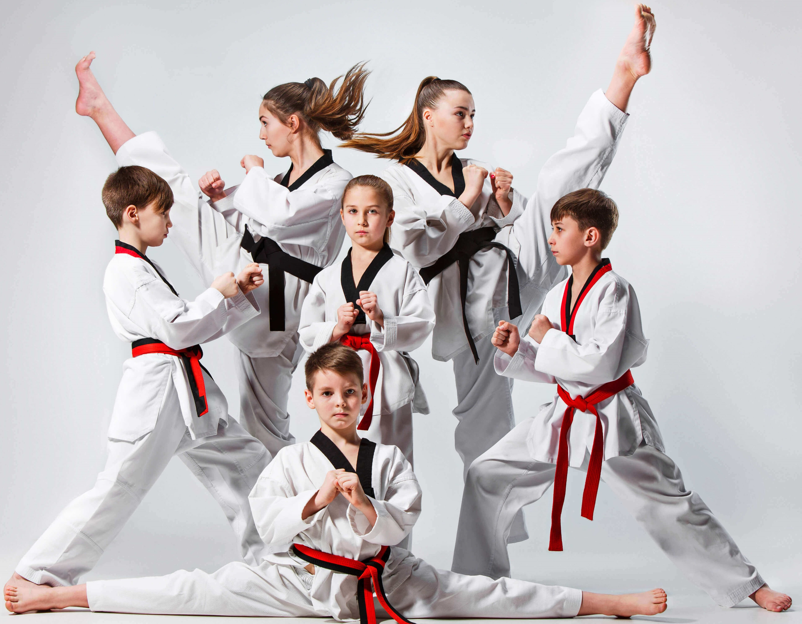
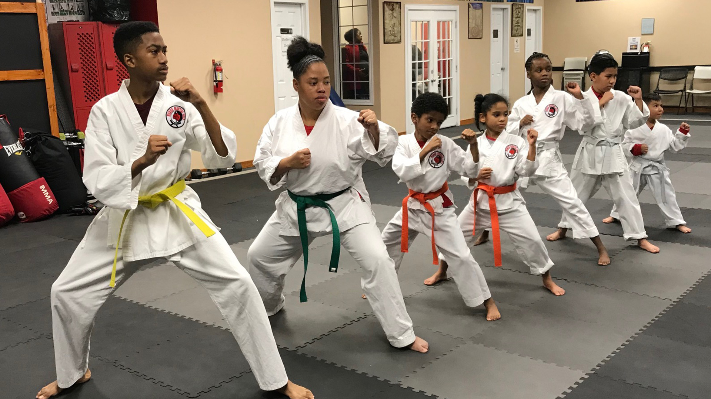
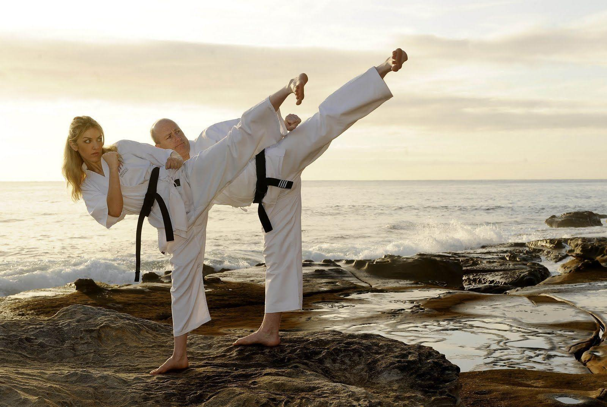
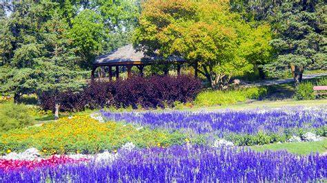

At [Martial Arts Studio Name], we believe in the transformative power of martial arts for everyone, regardless of age, background, or ability. Our journey began with a simple yet profound vision: to create a welcoming space where individuals from all walks of life can come together to learn, grow, and thrive through the practice of martial arts Inclusivity is at the heart of everything we do. We embrace diversity and celebrate the unique strengths and perspectives that each of our members brings to our community. Whether you're a seasoned practitioner or stepping onto the mat for the first time, you are valued and respected here.
We are committed to making martial arts accessible to everyone. Our dedicated team of instructors is trained to provide personalized instruction and support, ensuring that each student can progress at their own pace and reach their full potential. Our classes are designed to be inclusive, with modifications available to accommodate varying levels of physical ability and mobility.
In addition to our regular classes, we offer specialized programs tailored to specific needs, such as adaptive martial arts for individuals with disabilities. Through adaptive techniques and a supportive environment, we empower our students to overcome challenges, build confidence, and experience the joy of martial arts.
At [Martial Arts Studio Name], we are more than just a dojo – we are a family. Together, we cultivate a culture of respect, resilience, and camaraderie, where everyone feels valued and supported on their martial arts journey. Whether you're here to pursue fitness, self-defense, or personal growth, you'll find a welcoming community of like-minded individuals who share your passion for martial arts.
We have dojos, we have great instructors, we have great prices, why not take it further and visit our peace garden. Our garden is home to many species of insects, birds, trees, and plants. you don't need to have a training session to visit our peace garden. As long as you have a membership with us, you can visit during our opening times.
Join us today and discover the power of martial arts to transform your life – and the lives of those around you. Together, we can achieve greatness, one kick, punch, and kata at a time.